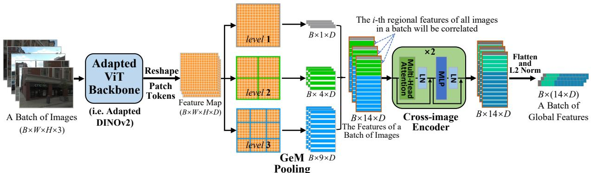
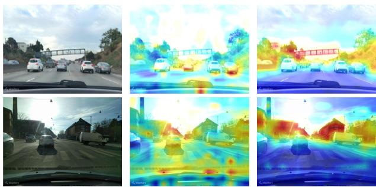

原图注（Fig. 2，正文描述）：…as shown in Fig. 2. On the one hand, image representations from the same place with different perspectives and conditions can improve the viewpoint invariance and condition invariance of each other after the correlated encoding. On the other hand, image representations from different places also promote each other to produce discriminative features. 怎么看这张图：展示一个 batch 里既有「同地不同视角/条件」、也有「异地但相似」的图。CricaVPR 让它们互相关注：同地的互相补视角/条件不变性，异地的互相强化判别力。这正是「跨图像关联」的动机可视化。

原图注（Fig. 3，正文描述）：We design the pipeline to produce desired global features as shown in Fig. 3. The output patch tokens of a batch of images from the ViT backbone are reshaped as the B×W×H×D-dim feature maps. We first use the spatial pyramid to produce initial feature representations… Next is the most critical step. We treat the i-th regional features of all images in a batch as a sequence of embedding vectors… 怎么看这张图：ViT 出 patch token → spatial pyramid 分三级得 14 区域特征 → 把 batch 内同位置区域特征串成序列送 cross-image encoder → 拼接+L2 成全局描述子。这条「批内互注意」链就是上面公式的工程实现。

原图注（Fig. 6，正文描述）：Fig. 6 vividly illustrates the underlying reasons. The adapted DINOv2, in contrast to the pre-trained DINOv2, exhibits a stronger ability to focus on objects related to place recognition, with more attention given to more important objects. 怎么看这张图：对比「冻结 DINOv2」与「适配后 DINOv2」的注意力——适配后的网络明显更聚焦建筑、植被等不变地标，忽略天空、地面、动态车。这也侧面说明为什么 SALAD 的 dustbin 能直接丢天空/路面：基础模型已经学会「什么该忽略」。
这张图在画什么：左边是一张真实街景（天空、两栋楼、一棵树、路面、一辆车），上面画了 patch 分块虚线。中间是这张图里挑出来的 5 个 patch（块 1 到块 5），右边是 SALAD 的视觉词簇：簇 A 建筑墙面、簇 B 窗户、簇 C 植被，以及一个 dustbin。 怎么看这张图：① 每条实线是一次「软分配」：块 1 以 0.8 的权重分到簇 A、块 2 以 0.7 分到簇 B、块 3 以 0.5 分到簇 C——注意权重不必是 1，同一个 patch 也可以同时部分属于几个簇。② 块 4（天空）和块 5（路面）指向的虚线终点是 dustbin：它们的结构信息太少，直接拒掉、不污染最终向量。③ 最后一步是把落到同一个簇的特征加起来，得到 8192+256 维描述子——这里全程只有一张图，没有任何「另一张图」参与。 要记住的一句话：SALAD 的 OT 是「一张图的特征分到哪些视觉词簇」（feature → cluster），SuperGlue 的 OT 是「两张图的点谁配谁」（feature ↔ feature）；两者都叫 Sinkhorn、都有 dustbin，但目标完全不同。
原图注（Fig. 1）：Illustration of a VPR baseline (left) and our contribution (right). The left column outlines a typical VPR baseline, a ResNet backbone followed by NetVLAD aggregation. On the right column, we replace ResNet with a partially fine-tuned DINOv2 backbone, and incorporate SALAD, our novel optimal transport aggregation using the Sinkhorn Algorithm. 怎么看这张图：左是经典「ResNet + NetVLAD」基线，右把骨干换成「微调末 4 层的 DINOv2」、把聚合换成 SALAD（OT + dustbin）。一句话点明 SALAD 的两大改动：更好的基础模型 + 更好的聚合方式。
原图注（Fig. 2）：Overview of our method. First, the DINOv2 backbone extracts local features and a global token from an input image. Then, a small MLP, score projection, computes a score matrix for feature-to-cluster and dustbin relationships. The optimal transport module uses the Sinkhorn algorithm to transform this matrix into an assignment, and subsequently, dimensionality-reduced features are aggregated into the final descriptor based on this assignment and concatenated with the global token. 怎么看这张图：DINOv2 出局部特征 + global token → score 矩阵（含 dustbin）→ Sinkhorn 求分配 → 按分配聚合（降维后求和）并拼 global token → 最终描述子。这就是上面「螺丝分进 K 个孔」那张自绘图的工程真身。
原图注（Fig. 4）：Illustration of feature-to-cluster assignments. See at the leftmost and rightmost part of the figure two different views of the same place. Framed by red and blue squares we highlight two corresponding patches in each of the images. The central part of the figure shows the feature-to-cluster assignments for these patches. Note how DINOv2 SALAD correctly assigns the features to the same bins for both views, even with different local texture. 怎么看这张图：同一地点两个视角，红/蓝框标出对应 patch；中间显示它们被分到同一个簇。正因为「同一地点的特征稳定分到同簇」，描述子才对视角/光照鲁棒——这正是 feature→cluster 聚合（而非 feature↔feature 匹配）的价值：它关心「属于哪类地标」，不关心「和哪张图的点配对」。